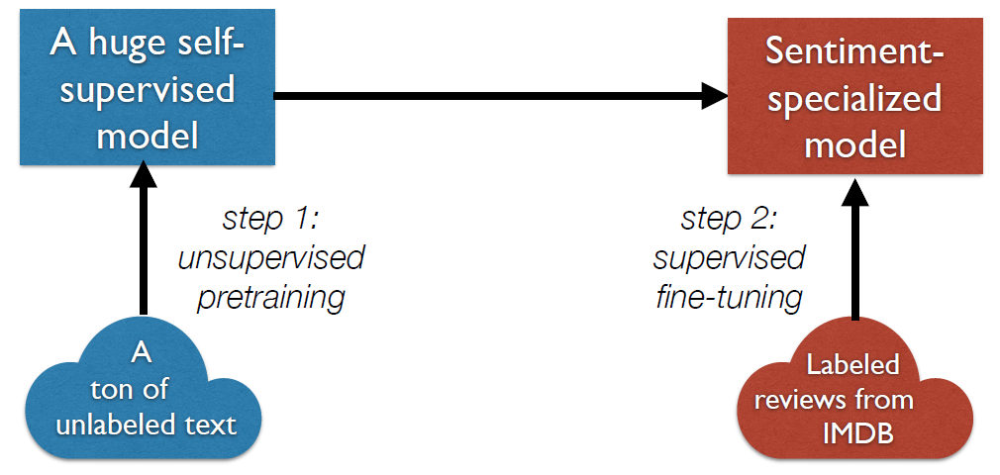
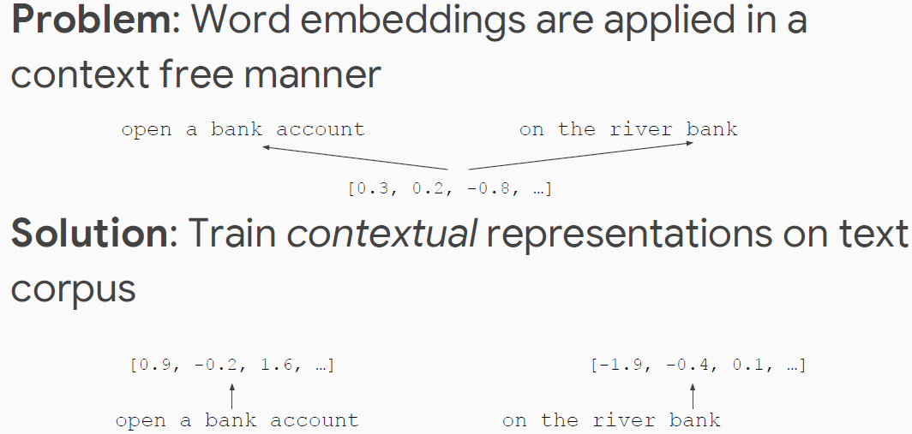
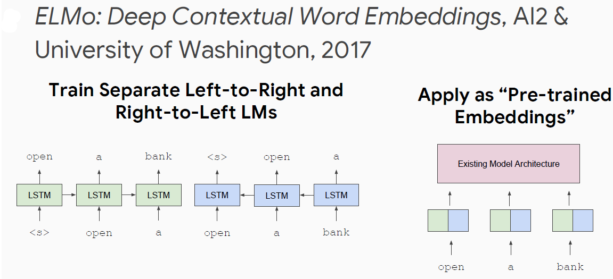
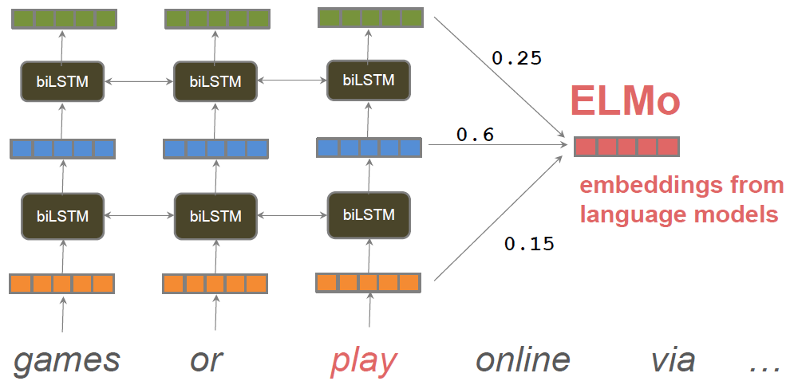

Transfer learning with neural language models
What is transfer learning
In our context: take a network trained on a task for which it is easy to generate labels, and adapt it to a different task for which it is harder.
- In computer vision: train a CNN on ImageNet, transfer its representations to every other CV task
- In NLP: train a really big language model on billions of words, transfer to every NLP task!

Contextual Representations

History of Contextual Representations


ELMo representations are contextual: they depend on the entire sentence in which a word is used.
BERT
Problem with Previous Methods
Language models only use left context or right context, but language understanding is bidirectional

Masked LM
Model Architecture


Fine-Tuning Procedure

Develop History